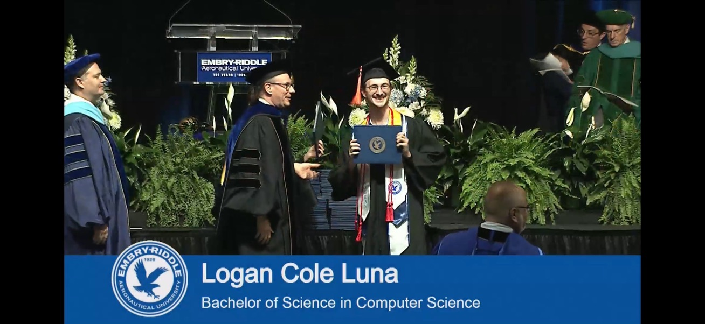
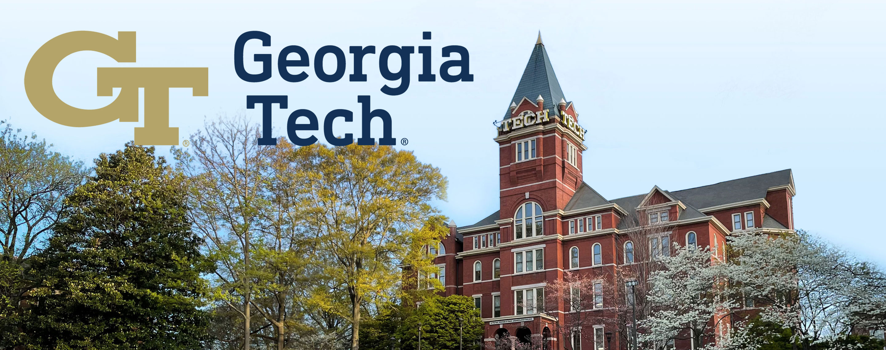

Brief Bio
I am a B.S. Computer Science graduate (Honors Program, magna cum laude) with a minor in Applied Mathematics from Embry-Riddle Aeronautical University (May 2026, cumulative GPA 3.85/4.00), and Embry-Riddle's Outstanding Undergraduate in Computer Science (2025 & 2026). In August 2026, I began an M.S. in Computer Science (Artificial Intelligence specialization, thesis track) at the Georgia Institute of Technology. My work spans deep learning theory and optimization, reinforcement learning, cybersecurity, and autonomous systems, with a strong focus on building systems that are both theoretically grounded and deployable in real-world environments.

As a DoW SMART Scholar and intern (Active Secret clearance) at NSWCDD, I develop real-time autonomous object tracking systems that fuse YOLO-based detection, ORB keypoints, optical flow, re-identification, and Kalman filtering. At Georgia Tech's Reasoning and Learning Group, I contribute to LogicComplexityLib, auto-formalizing logic and model theory textbooks with neuro-symbolic reasoning tools. At Embry-Riddle, I led software R&D for an autonomous underwater vehicle in the Autonomous Maritime Robotics Association, integrating sonar, computer vision, and ML-based decision pipelines.

Education
-
Georgia Institute of Technology, Atlanta, GA
M.S. Computer Science, Specialization in Artificial Intelligence (Thesis Track)
August 2026 – Expected December 2027 -
Embry-Riddle Aeronautical University, Daytona Beach, FL
B.S. Computer Science (Honors Program, magna cum laude), Minor in Applied Mathematics
August 2022 – May 2026 · GPA 3.85/4.00 · Outstanding Undergraduate in Computer Science
Professional Experience
-
Naval Surface Warfare Center Dahlgren Division (NSWCDD)
Scientist Intern, Beam and Optic Control for High Energy Weapons, 2024–Present · Active Secret Clearance.
Designed a lightweight temporal feature approach for stability under infrequent target appearances; built a real-time tracking pipeline with YOLO, ORB keypoint matching, homography-based optical flow, re-identification, and Kalman filtering; integrated radar sensing to improve detection precision and track continuity. -
Reasoning and Learning Group, Georgia Institute of Technology
Researcher, AI4Math / Auto-formalization, 2025–Present · Group Lead: Dr. Vijay Ganesh.
Contribute to LogicComplexityLib, auto-formalizing logic and model theory textbooks using neuro-symbolic reasoning tools; extract theorem–proof pairs and evaluate Lean formalizations. -
Agile Research Group, Embry-Riddle Aeronautical University
Researcher, Satellite Trajectory Optimization, 2024–2026 · Group Lead: Dr. Omar Ochoa.
Developed a PPO-based RL framework for fuel-aware satellite collision avoidance; studied reward shaping and curriculum learning for reproducible evaluation.
Selected Roles
-
Software Department Head,
Autonomous Maritime Robotics Association (AMRA), 2022–2026.
Leading AUV perception and decision-making software; mentoring students on research and publication; contributed to a 16th-place finish out of 52 schools at the international RoboSub competition.
Skills
- Programming: Python, C/C++, Java
- ML/CV: PyTorch, TensorFlow, OpenAI Gym, SHAP, OpenCV, YOLO
- Mathematics: Linear Algebra, Calculus I–III, Differential Equations, Probability & Statistics, Discrete Mathematics, Optimization
- Tools: Git, Docker, Linux, NVIDIA Isaac Lab, Lean
Curriculum Vitae
Full CV available here: Download CV (PDF)